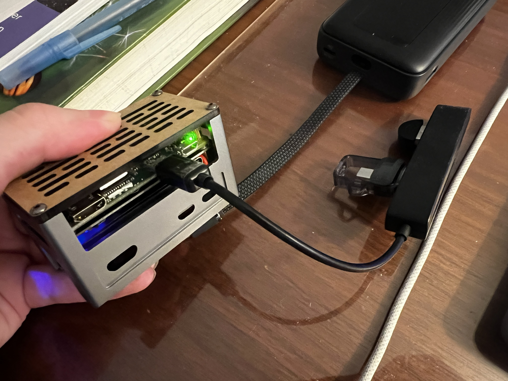
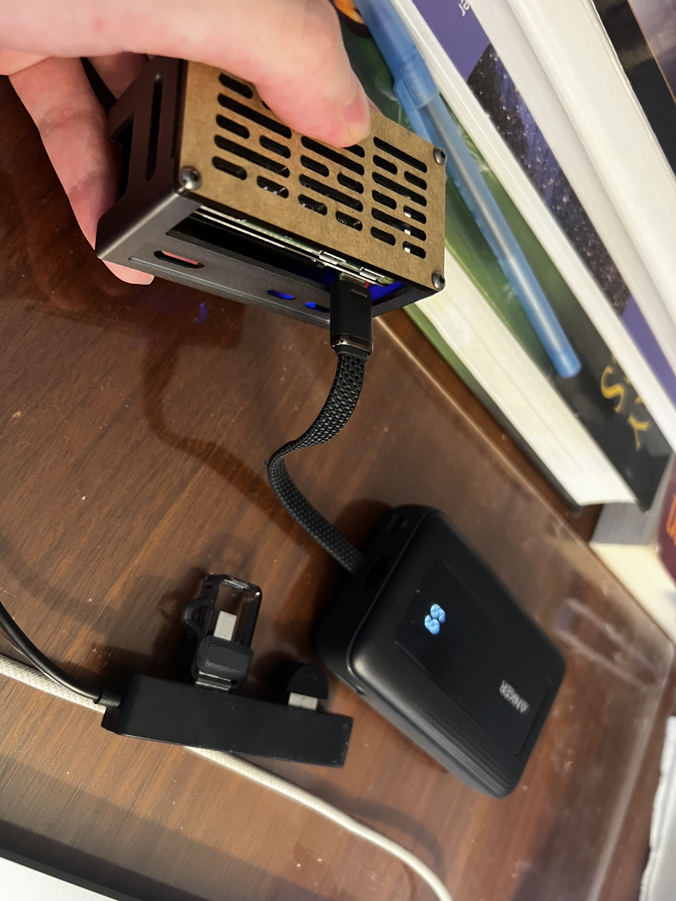
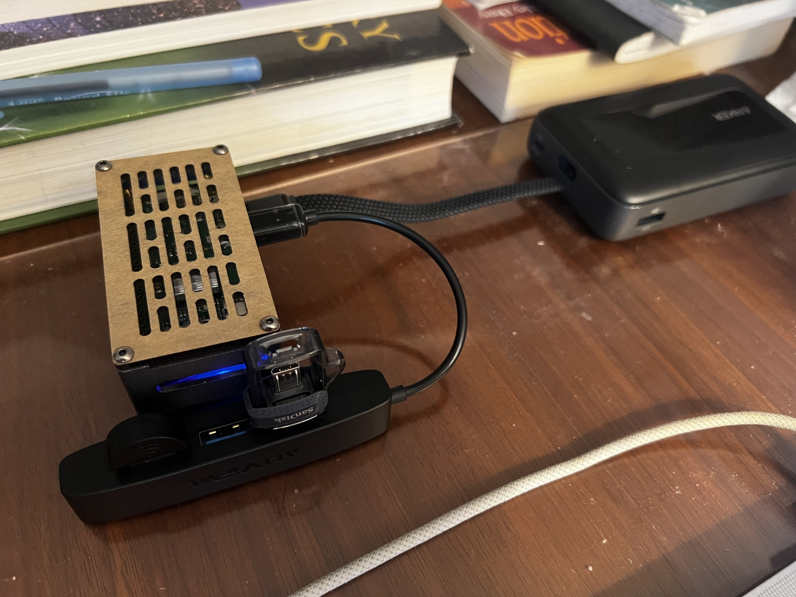

LifeTrace 2
I'm heading to Korea for ICML. I've downsized the earlier lifetrace assembly so that I can bring it with me more easily. This version uses a raspi Zero with a 128GB drive to store audio files since I expect the venue to have some wifi issues. For this trip I'm mainly interested in recording what I say / hear (passive recording for the whole day), so I only focused on getting the Audio recording feature integrated.
The box contains the main board and a small battery, and it can operate as long as the extension with the microphone and SanDisk drive is attached. I also have a larger Anker battery that I plan to use to charge both my phone and this device. The audio is uploaded to a server when WiFi is discoverable and we run ASR to keep only transcriptions with no speaker tagging.
The internal assembly is minimal: the Raspi Zero sits inside the enclosure with a USB-C power port exposed on the bottom. The extension cable carries the microphone and SanDisk flash drive.



Next Steps
I'll be trying to add the camera / a more efficient case for the next iteration.
--Hanqi Xiao
Comments